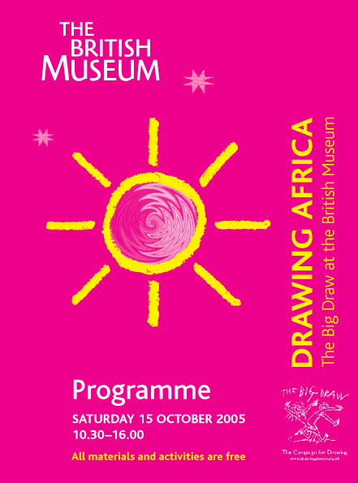

|
Drop-in events |
||
| Great Court Workshops (see VENUE KEY at bottom of page for locations) 10.30–15.30 Make African Rock Paintings Led by Jill Cook SE 10.30–16.00 Draw an African village Led by David Allsop and Nick Badcott SW 11.00–12.30 Design and make a badge with an African image Led by Davinia Jennings WG 12.00–15.00 Drawing with glue and sawdust Led by Sokari Douglas Camp SW 12.00–15.00 Drawing for families with toddlers Led by Kate Kelland EP 13.00–16.00 Making marvellous masks Led by Helen Tweed. Ages 7+ WG Drawing stations – draw at leisure 11.00–16.00 Egyptian Sculpture Gallery Room 4 11.00–16.00 Enlightenment Gallery Room 1 |
Other activities ticketed events |
||
| Ticketed events The following events are free but have limited places. Tickets must be obtained from the Big Draw Desk in the Great Court. See VENUE KEY for locations. |
11.45–13.15 Drawing Egyptian hieroglyphs on papyrus (1) Workshop led by Delia Pemberton. For families with children aged 7+ Room 4, North end 13.00–14.00 Drawing the animals of Africa Lunchtime lecture by renowned wildlife artist David Shepherd. For adults and families CEC, BP Lecture Theatre 13.30–14.20 Eye-opener tour:Africa Led by British Museum volunteers. For adults Room 24 13.30–14.30 Drawing with electrons (2) Workshop led by Paul Clifford. For families with children aged 5+ CEC, ICT Room 13.30–14.30 Archaeological illustration: objects from Africa and Pharonic Egypt (2) Workshop led by Claire Thorne and Katharine Hoare. For families with children aged 5+ FC Blue Zone 14.00–14.45 Building a drawing: Benin bronzes (1) Tutored by Julia Seton. For adults and children aged 7–13 Room 25 |
14.00–15.30 Creative workshop for adults with learning difficulties Led by Charles Hustwick Great Court SE 14.15–14.45 Rome in Africa Crocodile armour and much more. Special talk by BM Guide Room 70 14.15–15.45 Drawing Egyptian hieroglyphs on papyrus (2) Workshop led by Delia Pemberton. For everyone aged 7+ Room 1, by the Rosetta Stone replica 14.30–16.00 Drawing the image of Africa with words Creative writing and drawing combine, with writer-in residence, Diran Adebayo, and Rebecca Jewell. For everyone aged 8+ Reading Room 14.45–15.45 Ways of seeing (2) Workshop led by Harry Potter illustrator Cliff Wright. For everyone aged 7+ CEC, Sackler Rooms 14.45–16.00 Recording African flowers through drawing Led by Annie Farrer, RHS, Kew Gardens. For adults CEC, Studio |
15.00–16.00 VENUE KEY |
| 10.30–13.00 Creative workshop for deaf adults Led by Charles Hustwick Great Court SE 11.15–12.15 Archaeological illustration: objects from Africa and Pharonic Egypt (1) Workshop led by Claire Thorne and Katharine Hoare. For adults FC, Blue Zone 11.15–12.15 Drawing with electrons (1) Workshop led by Paul Clifford. For families with children aged 5+ CEC, ICT Room 11.30–12.30 Ways of seeing (1) Workshop led by Harry Potter illustrator Cliff Wright. For ages 11+ CEC, Sackler Rooms 11.45–13.00 Drawing African pots Workshop led by Rebecca Jewell. For families with children aged 3+ Room 25 |
|||